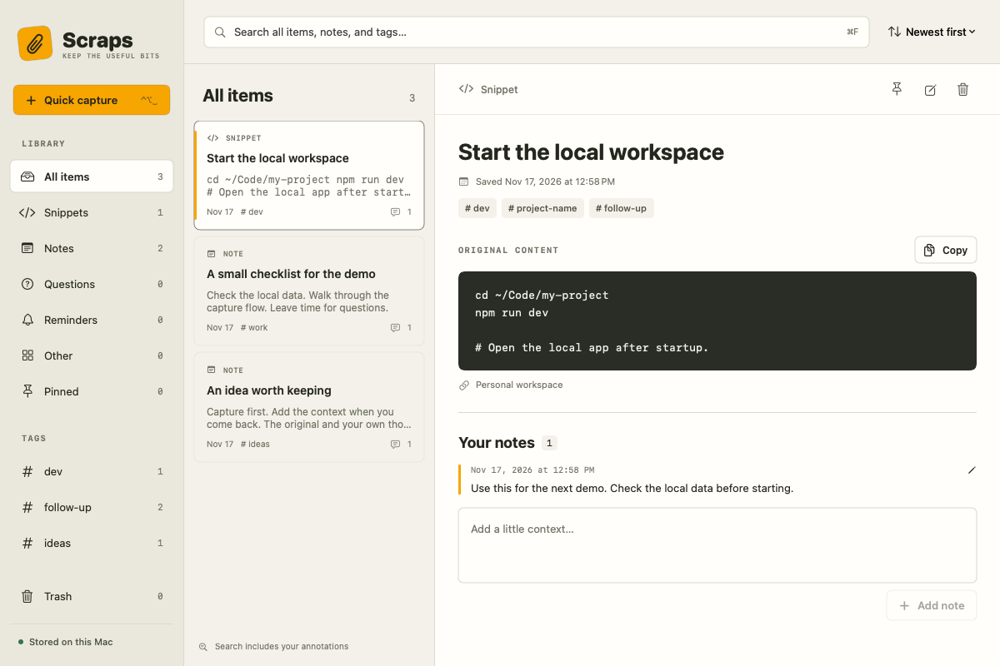
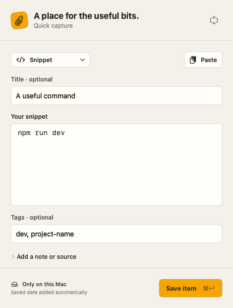

Save first.
Sort it later.
Paste something worth keeping. Titles and tags are optional, and the saved date takes care of itself.
The command that worked. The idea from that chat. The note that explains it all. Give them a home, right in your menu bar.
macOS 14+ MIT licensed Signed app download not yet available

Paste something worth keeping. Titles and tags are optional, and the saved date takes care of itself.
Add dated notes to any item. Keep the gotcha, the follow-up, and your own thinking alongside the original.
Search content, annotations, sources, and tags together. Filter by type or pin the things you reach for most.
A tiny interruption
Click the tray icon or press ⌃ ⌥ Space to open quick capture. Save with ⌘ Return, then get back to what you were doing.
Reminder is an item type for things to revisit. Scheduled notifications aren’t part of this version.

Your Mac. Your library.
Scraps stores its library locally and makes no network requests. No sync service, analytics, or background clipboard collection.
Local storage is unencrypted in this first version. Dedicated credential storage and recordings aren’t included yet.
Make yourself at home
You’ll need macOS 14 or later and Apple’s Command Line Tools. There are no third-party app dependencies.
The local build is ad-hoc signed. A Developer ID signed and notarized download will be published separately.
Read the build instructionsgit clone https://github.com/ChaosDeSelva/Scraps.git
cd Scraps
bash scripts/build.sh
open build/Scraps.appGood things deserve
a place to land.